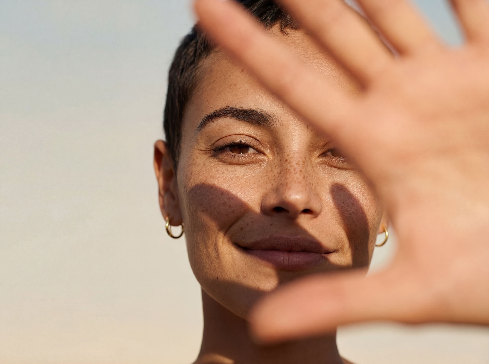
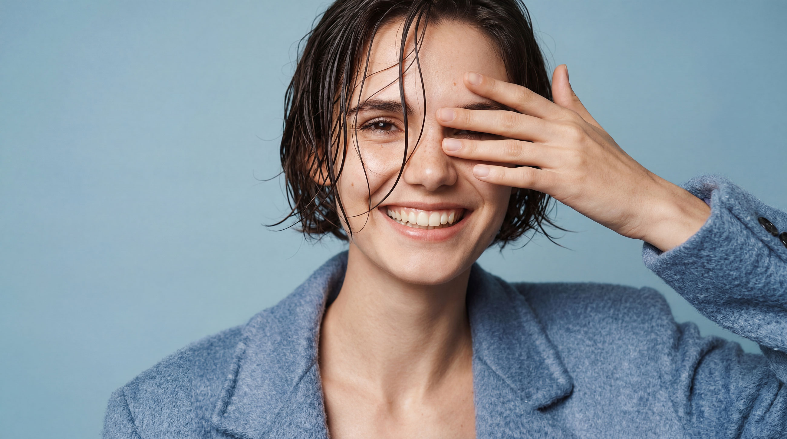

Convertirse en AI Model en Suiza
Esta guía explica todo lo que necesita saber antes de solicitar ser AI Model en Visari: cómo funciona, cuánto puede ganar y qué derechos conserva. Sin texto de ventas. Solo hechos.
Fundamentos
El término suena técnico, pero es sencillo: un AI Model es una representación generada por IA de una persona, utilizada para publicidad comercial. Modelar con Visari significa: sin estudio, sin casting, sin cita. En Visari hay dos tipos:
Un AI Model completamente sintético. Ninguna persona real sirve de referencia. La apariencia es generada completamente por IA.
El AI Model se basa en la apariencia con licencia de una persona real — usted. Sus fotos sirven como base de entrenamiento. La imagen generada se parece a usted, pero no es una fotografía directa.
Como model registrado en Visari, trabajará en el área Human Origin. Su apariencia real se captura fotográficamente una sola vez, se usa para crear un modelo de IA, y las fotos originales se eliminan después. Lo que queda es un modelo digital que usamos exclusivamente para fines publicitarios curados y serios.
Requisitos
Visari no busca models de alta gama. Buscamos personas. Reales, diversas, expresivas, porque las marcas hoy necesitan mundos visuales auténticos. Modelar nunca ha sido tan accesible.
Todos los grupos de edad. Models senior, tipos business, adultos jóvenes, padres. La diversidad es un requisito.
Sin estándar de belleza. Lo que cuenta: presencia, naturalidad y una foto clara.
Modelar funciona sin experiencia previa. Sin portfolio, sin agencia, sin casting. El proceso está diseñado para todos.
Sin equipo profesional. Un smartphone actual con buena cámara y una habitación luminosa son suficientes.
Ingresos
No hay salario fijo. El modelo es un Revenue Share: recibe una parte definida en cada reserva comercial de nuestros clientes. Según el alcance del proyecto, los ingresos potenciales son de CHF 225 a CHF 3.250 por reserva. Con un esfuerzo único de 30 minutos de su parte.
Campaña individual
Por reserva para una campaña estándar. Varios motivos para publicidad, tienda online o newsletter.
Proyectos mayores
Por reserva para campañas Extended con mayor uso en diferentes canales y formatos.
Su esfuerzo: una sola vez aprox. 30 minutos desde casa. Después gana automáticamente en cada reserva. Todos los importes son ingresos potenciales, dependientes de la frecuencia de reservas y el alcance del proyecto.
Bono adicional
Exclusivo: en la primera reserva por un cliente recibe CHF 100 adicionales a su tarifa regular.
Revenue Share
En cada uso comercial de su model recibe automáticamente un porcentaje definido de los ingresos de licencia.
Pasivo
Tras el onboarding único (aprox. 30 minutos), su esfuerzo ha terminado. Las reservas y pagos se procesan automáticamente.
Calcule su ingreso potencial →
| AI Model (Visari) | Model tradicional | |
|---|---|---|
| Tiempo invertido | 30 minutos, una vez | Sesiones continuas |
| Ingresos | Pasivo, automático | Activo, por encargo |
| Equipo | Smartphone | Profesionales, estudio |
| Exclusividad | Sin contrato de exclusividad | A menudo exclusividad con agencia |
| Experiencia | No necesaria | A menudo requerida |
| Presencia física | No, todo remoto | Sí, citas de sesión |

Paso a paso
Breve formulario: nombre, edad, 2–3 fotos. Sin currículum, sin portfolio. 5 minutos.
Fotografiar DNI, breve vídeo en directo. Automático, sin cita. 2 minutos.
Recibir briefing ilustrado. Hacer aprox. 5 fotos en casa y subirlas. 15 minutos.
Firmar contrato digitalmente online. Conforme al derecho suizo. Después gana automáticamente en cada reserva.
Solicitud (5 min.) + Verificación (2 min.) + Fotos (15 min.) + Contrato (5 min.) = Listo.
Transparencia & Seguridad
La mayor preocupación es la pérdida de control. Nos lo tomamos en serio. Aquí, sin marketing, lo que el contrato regula concretamente.
En el contrato establecemos juntos qué sectores y contenidos están excluidos. Sin uso para alcohol, tabaco, contenido político ni erótico. Vinculante contractualmente.
Puede revocar su consentimiento en cualquier momento. Período de transición contractualmente definido para campañas en curso. Sin sanciones.
Las fotos originales se usan exclusivamente para el entrenamiento y luego se eliminan. Lo que queda es el modelo digital entrenado. Conforme al nDSG.
Puede trabajar en paralelo para otros clientes, agencias o proyectos. Visari no tiene derechos sobre su actividad futura.
Lo que NO cede: Sus derechos de autor, su identidad, su derecho a su nombre, su derecho de la personalidad según el Art. 28 ZGB.
Lo que CEDE: Derechos de uso definidos, limitados temporal y contenidamente sobre su apariencia para imágenes comerciales generadas por IA.

Preguntas abiertas
Visari revisa cada reserva antes de aprobarla. Los clientes deben revelar la campaña y el propósito de uso. Lo que no está en el contrato no se aprueba. Todas las imágenes generadas por IA deben etiquetarse como tales (Reglamento IA UE).
Sí. Se le informa por correo electrónico en cada reserva, incluyendo nombre del cliente y contexto de uso. La transparencia total es la base del negocio.
El modelo de IA se crea una sola vez y permanece en ese estado. Los cambios no afectan al modelo existente. Puede solicitar una actualización o revocar su consentimiento en cualquier momento.
No. Su nombre no se comunica a los clientes. El AI Model tiene un nombre de model neutro propio. Su identidad permanece protegida.
Regulado en el contrato: eliminación completa de todos los datos y modelos en caso de cierre de la empresa. Sin reventa a terceros.
FAQ
No. Buscamos personas con presencia y naturalidad. No se requiere experiencia en pasarela, portfolio ni pertenencia a agencia.
Nada. La incorporación a nuestro pool es completamente gratuita. Recibirá un pago cuando se reserve su model.
Aprox. 30 minutos en total: solicitud (5 min.), verificación (2 min.), leer y ejecutar el briefing fotográfico (15 min.), firmar contrato (5 min.). Todo desde casa.
Sí, en cualquier momento. Con período de transición contractualmente definido para campañas en curso. Sin sanciones, sin presión.
No. Su nombre no se comunica. El AI Model tiene un nombre de model neutro propio. Su identidad permanece protegida.
Sí. No hay contrato de exclusividad. Permanece completamente libre.
Exclusivamente para empresas serias verificadas por Visari en la región DACH. Los sectores que desee excluir se establecen en el contrato.
Sí. El proceso de onboarding es completamente remoto. Contrato según el derecho suizo. Solicitudes de toda la región DACH bienvenidas.
100% Profesional
Solo PyMEs suizas reconocidas y corporates en la región DACH. Cada cliente se verifica antes de la colaboración.
Contractualmente excluido. Sin excepción. Sus límites son respetados.
Sin tarifas de incorporación, sin costes ocultos. El pago solo al recibir un encargo.
¿Listo?
Nuestro pool de models abrirá pronto. Apúntese a la lista de espera. Le informaremos en cuanto comience la fase de solicitudes.
Unirse a la lista de espera Más sobre la solicitud¿Preguntas? info@visari.ch